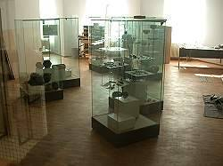

| In Deutsch |
| In Deutsch |
Ulmer Museum
Archaeological Collection
Useful Information
 |
| Image: the lion man exhibition. |
| Location: | In Ulm, Marktplatz, near the historic town hall. |
| Open: | All year Tue-Sun 11-17, exhibitions: Tue-Sun 11-17, Thu 11-20 [2003] |
| Fee: |
Adults EUR 3, Reduced EUR 2, Children (-14) free, Family EUR 4. Fri: free. Season ticket (1 year): Adults EUR 13.50, Reduced EUR 10. Season ticket (1 year) incl. exhibitions: Adults EUR 21, Reduced EUR 15. Schoolclasses: Pupil EUR 1, with guided tour EUR 2. [2003] |
| Photography: | |
| Accessibility: | |
| Bibliography: | |
| Address: |
Ulmer Museum, Marktplatz 9, 89073 Ulm, Tel. +49-731-161-4300, Fax: +49-731-161-1626 Informationsdienst des Ulmer Museums, Dr. Gerald Jasbar, Marktplatz 9, 89073 Ulm, Tel: +49-731-161-4312, E-mail: |
| As far as we know this information was accurate when it was published (see years in brackets), but may have changed since then. Please check rates and details directly with the companies in question if you need more recent info. | |
| Last update: | $Date: 2015/11/20 13:16:49 $ |
Description
|  |
| Image: a first glimpse of the future archaeological collection. |
The Ulm Museum owns a beautiful collection of archaeological items from the Swabian Jura. Most interesting are the Stone Age finds from the caves of the
There are exhibits of all epochs since Old Stone Age. The oldest remains are more than 40,000 years old. At this time the Hunters of the Ice Age strolled through the valleys of the Swabian Jura, hunting mammoth, wild horses and deer. From this early time are the two ivory carvings, the
There are remains of all following epochs, like Middle and New Stone Age, Bronze Age, Iron Age, and the Romans. Ulm is still south of the Limes near Aalen, the border which protected the Roman Empire for nearly 300 years.
The archaeological collection was closed and completely reorganized during the last years, and is reopened since June 2002.
 Search Google for "Ulmer Museum"
Search Google for "Ulmer Museum" Google Earth Placemark
Google Earth Placemark Ulmer Museum,
official site.
(
Ulmer Museum,
official site.
({kind=link}